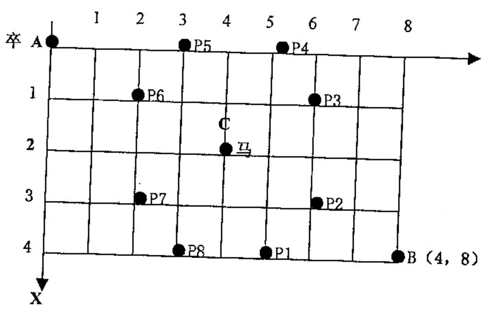

如图，$A$ 点有一个过河卒，需要走到目标 $B$ 点。卒行走规则：可以向下、或者向右。同时在棋盘上的任一点有一个对方的马（如上图的 $C$ 点），该马所在的点和所有跳跃一步可达的点称为对方马的控制点。例如上图 $C$ 点上的马可以控制 $9$ 个点（图中的 $P1，P2 … P8$ 和 $C$）。卒不能通过对方马的控制点。

棋盘用坐标表示，$A$ 点（$0$，$0$）、$B$ 点（$n$，$m$）($n,m$ 为不超过 $20$ 的整数)，同样马的位置坐标是需要给出的（约定：$C \ne A$，同时 $C \ne B$）。现在要求你计算出卒从 $A$ 点能够到达 $B$ 点的路径的条数。
输入 $B$ 点的坐标（$n,m$）以及对方马的坐标（$X,Y$）
一个整数（路径的条数）。
6 6 3 2
17
 Comet OJ
Comet OJ